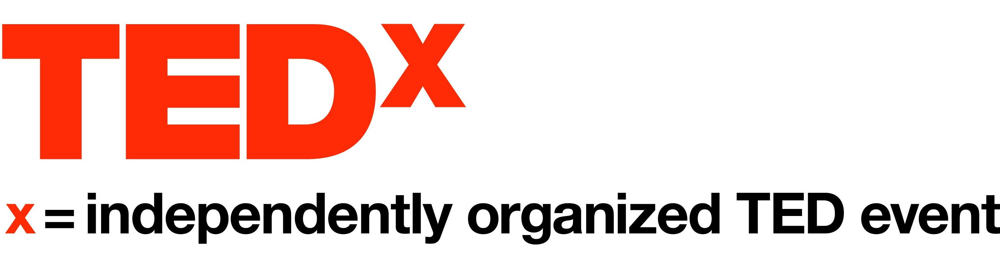

În spiritul ideilor care merită să se răspândească, TEDx este un program de evenimente locale, auto-organizate, care îi uneşte pe oameni pentru a împărtăşi o experienţă asemănătoare TED. Aceste evenimente locale, auto-organizate, sunt marcate TEDx, unde x = eveniment TED organizat independent. Conferinţa TED furnizează îndrumări generale pentru programul TEDx, dar evneimentele TEDx individuale sunt organizate în mod automat.
TEDx este un nou mod creativ de a aduce TED în lume. Programul TEDx permite comunităților din întreaga lume să-şi creeze propriile evenimente independente. Sub o licență TEDx, gazdele organizează propriile programe, combinând speakeri cu videouri TEDTalks.
Lansat în martie 2009, TEDx este cel mai nou și cea mai extinsă inițiativă TED. În primul an, mai mult de 200 de evenimente TEDx au fost organizate de către persoane fizice pasionate, ajungând astăzi la peste 1000 de evenimente TEDx.
TEDx = eveniment organizat în mod independent